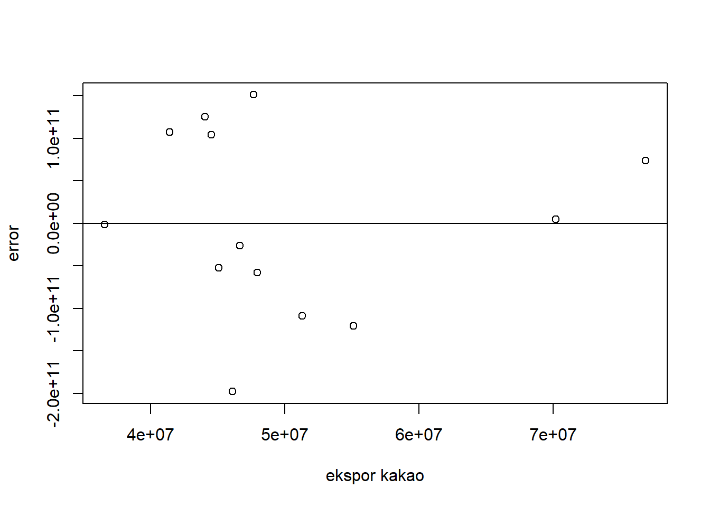
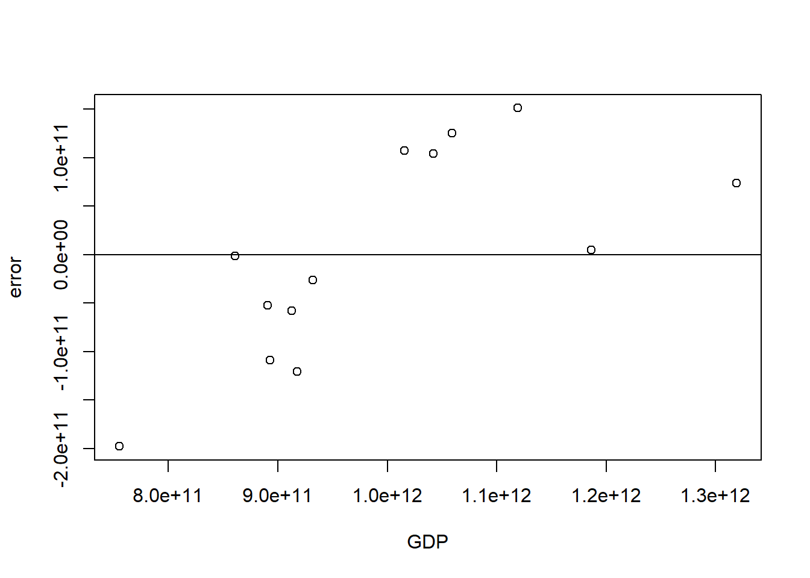

library('tidyverse')
library('readxl')
library('WDI')
library('kableExtra')Pengaruh Ekspor Kakao Terhadap Produk Domestik Bruto (PDB) di Indonesia 2010-2022
Metode Penelitian Politeknik APP Jakarta

1 Pendahuluan
1.1 Latar belakang
Pertumbuhan ekonomi adalah salah satu indikator penting untuk mengukur kemajuan suatu negara. Pertumbuhan ekonomi menjadi tujuan strategis bagi setiap negara karena dapat mencerminkan kemajuan dan kesejahteraan masyarakatnya. Indonesia merupakan salah satu produsen kakao terbesar di dunia dengan potensi ekonomi yang besar. Ekspor kakao merupakan salah satu sektor yang memiliki kontribusi positif terhadap pertumbuhan ekonomi Indonesia.
Meningkatnya permintaan internasional terhadap kakao, baik sebagai bahan baku industri makanan maupun minuman, telah membuka peluang besar bagi Indonesia untuk meningkatkan ekspor kakao. Dalam konteks ini, penelitian tentang Pengaruh Ekspor Kakao terhadap PDB di Indonesia menjadi relevan karena dapat memberikan pemahaman lebih mendalam tentang kontribusi ekspor kakao dalam mendorong pertumbuhan ekonomi nasional.
Penelitian ini bertujuan untuk menganalisis pengaruh ekspor kakao terhadap Produk Domestik Bruto (PDB) Indonesia selama periode 2010-2022. Dengan mendapatkan pemahaman yang lebih mendalam tentang hubungan antara ekspor kakao dan pertumbuhan ekonomi, kebijakan yang tepat dapat diambil untuk meningkatkan pertumbuhan ekonomi Indonesia secara keseluruhan.
1.2 Ruang lingkup
Pada penelitian ini penulis mengambil objek penelitian dari UN Comtrade Database dan World Development Indicators. Ruang lingkup penelitian ini terdapat 2 variabel yaitu nilai ekspor kakao dari Indonesia serta Nilai Produk Domestik Bruto (PDB) Indonesia. Data yang digunakan adalah data yang bersifat time series yaitu dalam kurun waktu 2010-2022. Satuan pada data ini telah diubah ke dalam USD untuk memudahkan penyetaraan mata uang secara internasional, dan dengan batasan ruang lingkup ini dapat membantu mengidentifikasi masalah yang akan dibahas.
1.3 Rumusan masalah
Berdasarkan uraian latar belakang diatas maka yang menjadi masalah pokok pada penelitian ini adalah:
- Apakah terdapat pengaruh dari ekspor kakao terhadap PDB Indonesia selama periode 2010-2022?
- Apakah terdapat hubungan antara jumlah ekspor kakao dengan pertumbuhan ekonomi Indonesia?
1.4 Tujuan dan manfaat penelitian
Berdasarkan latar belakang dan permasalahan diatas maka tujuan dari penelitian ini adalah untuk mengetahui pengaruh ekspor kakao terhadap PDB di Indonesia dan mengetahui hubungan antara jumlah ekspor kakao dengan pertumbuhan ekonomi di Indonesia.
Adapun manfaat dari penelitian ini antara lain:
- Bagi Penulis
Diharapkan penelitian ini bisa memberikan pemahaman yang lebih mendalam tentang kontribusi sektor ekspor kakao terhadap pertumbuhan ekonomi Indonesia, memberikan wawasan dan pengetahuan baru bagi peneliti, akademisi, dan masyarakat umum mengenai hubungan antara ekspor kakao dan pertumbuhan ekonomi di Indonesia.
- Bagi instansi
Sebagai bahan masukan dan informasi kepada pemerintah dan pelaku industri kakao mengenai pentingnya pengembangan sektor ekspor kakao untuk mendorong pertumbuhan ekonomi negara.
1.5 Package
Package yang digunakan penulis yaitu:
2 Studi pustaka
Ekspor adalah perdagangan lintas batas atau pertukaran barang produksi dalam negeri dengan barang luar negeri (Amir, 2000). Peningkatan ekspor akan memberikan kontribusi yang positif terhadap pertumbuhan ekonomi suatu negara. Salvator (1990) menegaskan bahwa ekspor merupakan salah satu mesin pendorong pertumbuhan ekonomi. Kajian yang dilakukan oleh Salvator menunjukkan bahwa ekspor merupakan salah satu faktor utama bagi negara berkembang untuk dapat meningkatkan pertumbuhan ekonomi.
Kakao merupakan salah satu komoditi hasil perkebunan yang mempunyai peran yang penting pada perekonomian Indonesia. Kakao adalah salah satu komoditas ekspor dari subsektor perkebunan yang menjadi komoditas unggulan nasional yang memberikan sumbangan devisa ketiga terbesar yaitu sebesar US$ 1,2 miliar setelah kelapa sawit dan karet (Goenadi et al., 2007). Hal ini menunjukkan bahwa kakao berperan penting dalam meningkatkan perekonomian.
Beberapa studi sebelumnya telah dilakukan untuk mengeksplorasi hubungan antara ekspor kakao dan pertumbuhan ekonomi di berbagai negara. Beberapa penelitian tersebut menunjukkan bahwa ekspor kakao dapat memberikan kontribusi positif terhadap pertumbuhan ekonomi melalui peningkatan produksi, peningkatan pendapatan petani kakao, penciptaan lapangan kerja, pembangunan infrastruktur, dan peningkatan pendapatan negara melalui penerimaan ekspor.
Dalam tulisan ini, penelitian tentang “Pengaruh Ekspor Kakao Terhadap Produk Domestik Bruto (PDB) di Indonesia” memiliki relevansi penting dalam konteks pengembangan sektor kakao dan kaitannya dengan pertumbuhan ekonomi negara. Melalui penelitian ini, diharapkan dapat memberikan wawasan baru dan informasi penting dalam upaya pengembangan sektor kakao dan pertumbuhan ekonomi di Indonesia.
3 Metode penelitian
3.1 Data
| tahun | ekspor kakao (x) | GDP (y) |
|---|---|---|
| 2010 | 46097711 | 7.550942e+11 |
| 2011 | 51287028 | 8.929691e+11 |
| 2012 | 55128651 | 9.178699e+11 |
| 2013 | 47963350 | 9.125241e+11 |
| 2014 | 45052915 | 8.908148e+11 |
| 2015 | 36559328 | 8.608542e+11 |
| 2016 | 46659384 | 9.318774e+11 |
| 2017 | 41397404 | 1.015619e+12 |
| 2018 | 44512303 | 1.042272e+12 |
| 2019 | 47677412 | 1.119100e+12 |
| 2020 | 44062401 | 1.059055e+12 |
| 2021 | 70187996 | 1.186505e+12 |
| 2022 | 76895405 | 1.319100e+12 |
Penelitian ini menggunakan data sekunder dengan bentuk data time series 2010-2022, data yang dipakai ialah data yang telah diolah dengan sumber UN Comtrade database dan World Development Indicators.
setwd('C:/Users/USER/Documents/metopel/latihan')
dat<-read_excel('datametopel1.xlsx')
library('readxl')
reg1<-lm(data=dat,y~x)
dat$u<-resid(reg1)
plot(dat$x,dat$u,xlab="ekspor kakao",ylab="error")
abline(h=0)
Plot ekspor kakao yang dipengaruhi error
setwd('C:/Users/USER/Documents/metopel/latihan')
dat<-read_excel('datametopel1.xlsx')
library('readxl')
reg1<-lm(data=dat,y~x)
dat$u<-resid(reg1)
plot(dat$y,dat$u,xlab="GDP",ylab="error")
abline(h=0)
3.2 Metode analisis
Metode yang dipilih adalah regresi univariat atau Ordinary Least Square (OLS) dengan 1 variabel independen. Penelitian ini merbaksud mencari hubungan antara GDP dan ekspor kakao. Spesifikasi yang dilakukan adalah:
\[ y_{t}=\beta_0 + \beta_1 x_t+\mu_t \] di mana \(y_t\) adalah GDP dan \(x_t\) adalah Ekspor kakao.
4 Pembahasan
4.1 Pembahasan masalah
| Variabel | Estimate Std | Error | t value | Prob (.) |
|---|---|---|---|---|
| Intercept | 5.158e+11 | 1.474e+11 | 3.50 | 0.00497 |
| x | 9.486e+03 | 2.865e+03 | 3.31 | 0.00695 |
| R Squared | 0.4991 | |||
| Adjuated R Squared | 0.4535 | |||
| F-statistic | 10.96 | |||
| Prob(F-statistic) | 0.006948 |
Hasil regresi setelah dimasukkan ke dalam rumus persamaan adalah:
Y = 5.158 + 9.485X
Ekspor mempunyai peran yang penting dalam meningkatkan Pertumbuhan Domestik Bruto (PDB), hal ini ditunjukkan dari nilai variabel X yang positif. Jika dilihat dari hasil regresinya, diketahui bahwa pertumbuhan ekonomi tidak sepenuhnya dipengaruhi oleh ekspor saja namun terdapat faktor-faktor lain.
Nilai intercept adalah 5.158, ini berarti bahwa ketika variabel independen sama dengan nol, diperkirakan nilai variabel dependen sebesar 5.158. Coefficient adalah besarnya perubahan y (PDB) yang diharapkan ketika x (ekspor kakao) mengalami perubahan satu satuan, dalam hal ini adalah 9.485, ini berarti bahwa setiap kenaikan satu satuan pada ekspor kakao, diperkirakan akan meningkatkan Pertumbuhan Domestik Bruto (PDB) sebesar 9.485.
Adjusted R-squared menunjukkan seberapa baik model ini menjelaskan variasi dalam data, dalam hal ini adalah 0.4535. Ini berarti sekitar 45,35% variasi dalam Pertumbuhan Domestik Bruto (PDB) dapat dijelaskan oleh ekspor kakao dan sisanya di jelaskan oleh faktor lain. Nilai F-statistik sebesar 10.96 menunjukkan bahwa variabel Pertumbuhan Domestik Bruto (PDB) berpengaruh terhadap tingkat pertumbuhan ekonomi.
4.2 Analisis masalah
Hasil regresinya adalah
setwd('C:/Users/USER/Documents/metopel/latihan')
dat<-read_excel('datametopel1.xlsx')
library('readxl')
reg1<-lm(data=dat,y~x)
dat$u<-resid(reg1)
summary(reg1)
Call:
lm(formula = y ~ x, data = dat)
Residuals:
Min 1Q Median 3Q Max
-1.979e+11 -5.821e+10 -1.701e+09 1.043e+11 1.511e+11
Coefficients:
Estimate Std. Error t value Pr(>|t|)
(Intercept) 5.158e+11 1.474e+11 3.50 0.00497 **
x 9.486e+03 2.865e+03 3.31 0.00695 **
---
Signif. codes: 0 '***' 0.001 '**' 0.01 '*' 0.05 '.' 0.1 ' ' 1
Residual standard error: 1.124e+11 on 11 degrees of freedom
Multiple R-squared: 0.4991, Adjusted R-squared: 0.4535
F-statistic: 10.96 on 1 and 11 DF, p-value: 0.006948Setiap kenaikan nilai ekspor kakao dengan diasumsikan nilainya 1, maka dapat meningkatkan Pertumbuhan Domestik Bruto (PDB) sebesar 9.485.
5 Kesimpulan
Setelah dilakukan penelitian melalui sistem regresi univariat atau Ordinary Least Square (OLS) dengan 1 variabel independent, maka di dapatkan kesimpulan sebagai berikut:
Ekspor kakao memiliki pengaruh terhadap pertumbuhan ekonomi di Indonesia pada periode 2010-2022, Ekspor mempunyai peran yang penting dalam meningkatkan Pertumbuhan Domestik Bruto (PDB), namun tidak sepenuhnya dipengaruhi oleh ekspor saja namun terdapat faktor-faktor lain.
Hubungan antara jumlah ekspor kakao dengan PDB Indonesia dapat dilihat dari nilai ekspor kakao yang memiliki nilai positif, melalui penerimaan ekspor kakao yang diperoleh dapat memberikan kontribusi positif terhadap pertumbuhan ekonomi melalui peningkatan produksi, peningkatan pendapatan petani kakao, penciptaan lapangan kerja, pembangunan infrastruktur, dan peningkatan pendapatan negara.
6 Referensi
Adi. (n.d.). Data Ekspor Kakao Indonesia: Potensi dan Tantangan di Masa Depan. Retrieved from jangkargroups.co.id: https://jangkargroups.co.id/
Augustin, N. P. (2022). Edy Prasetyo 2 , Siswanto Imam Santoso 3 1*. 6, 442–455. https://www.researchgate.net/publication/362140863_Analisis_Daya_Saing_dan_Trend_Ekspor_Kakao_Indonesia_ke_Lima_Negara_Tujuan_Tahun_2010-2019
Ginting, A. M. (2017). Analisis Pengaruh Ekspor Terhadap Pertumbuhan Ekonomi Indonesia. Buletin Ilmiah Litbang Perdagangan, 11(1), 1–20. https://doi.org/10.30908/bilp.v11i1.185
hestanto. (n.d.). Pengertian Ekspor Menurut Para Ahli. Retrieved from hestanto.web.id: https://www.hestanto.web.id/mengenal-ekspor-menurut-para-ahli/
Tumanggor, j. (2023). Analisis Ekspor Kakao Indonesia Periode 1991-2020 (Doctoral dissertation, Universitas Jambi). https://repository.unja.ac.id/55234/5/Bab%20I-15-22.pdf